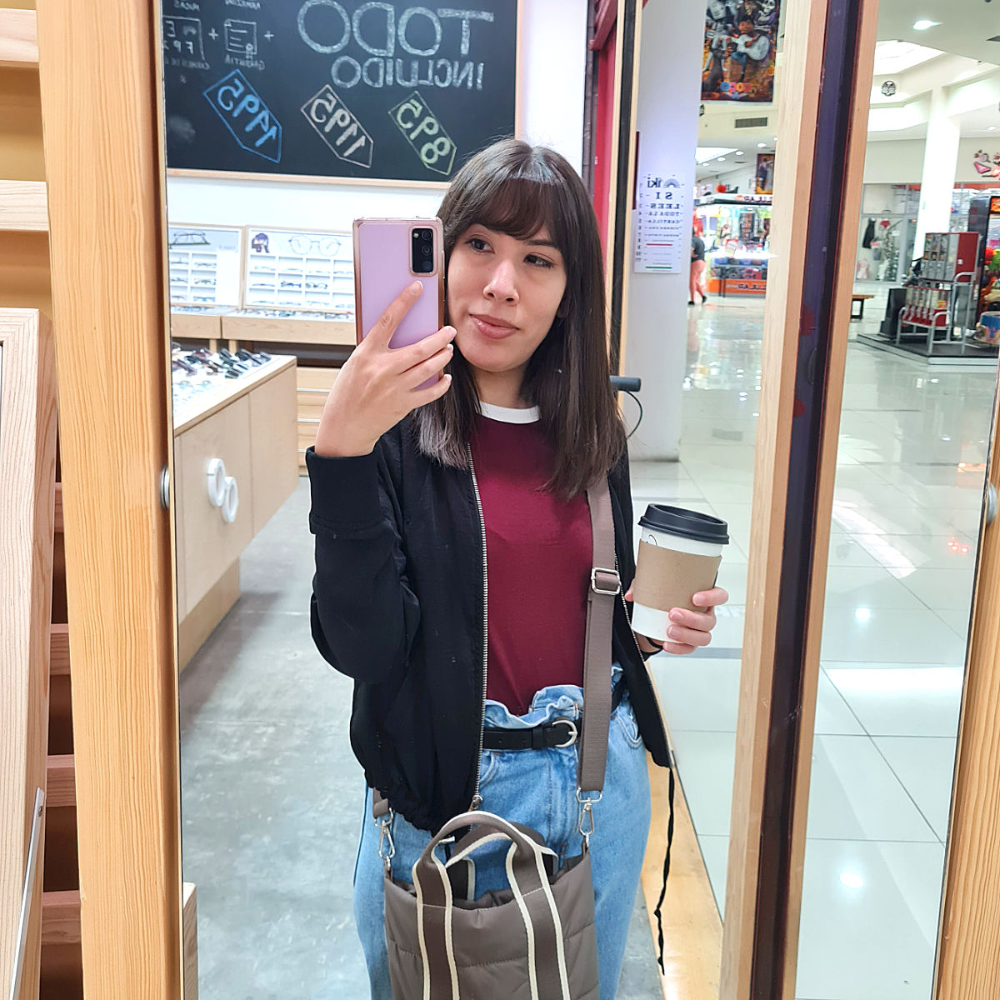
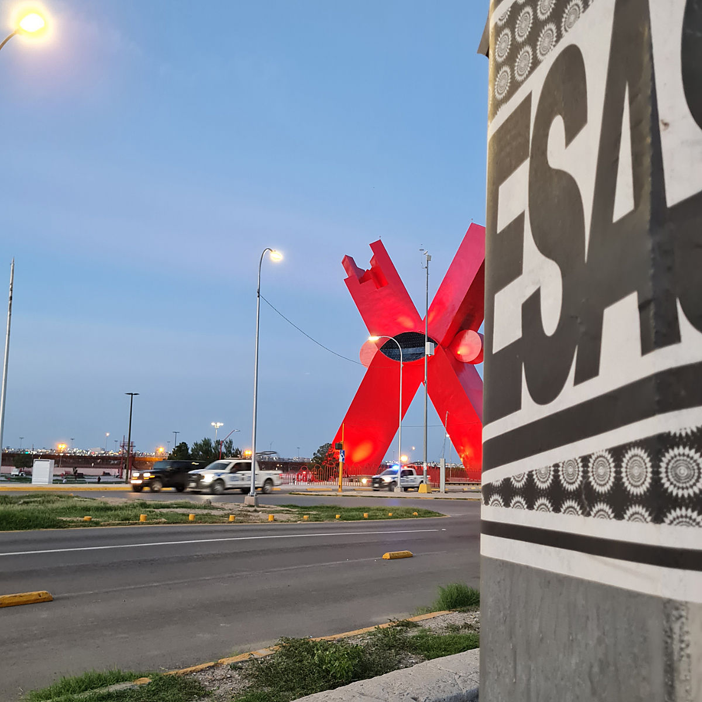
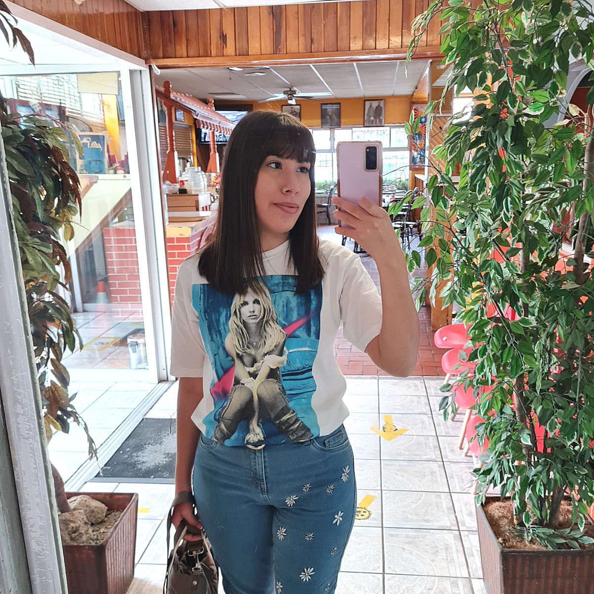
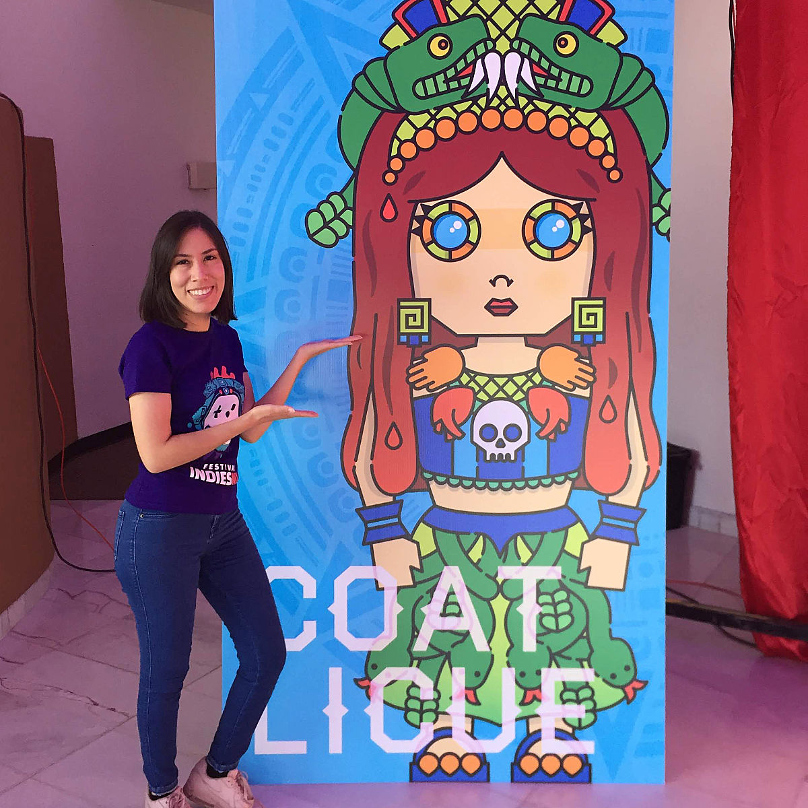
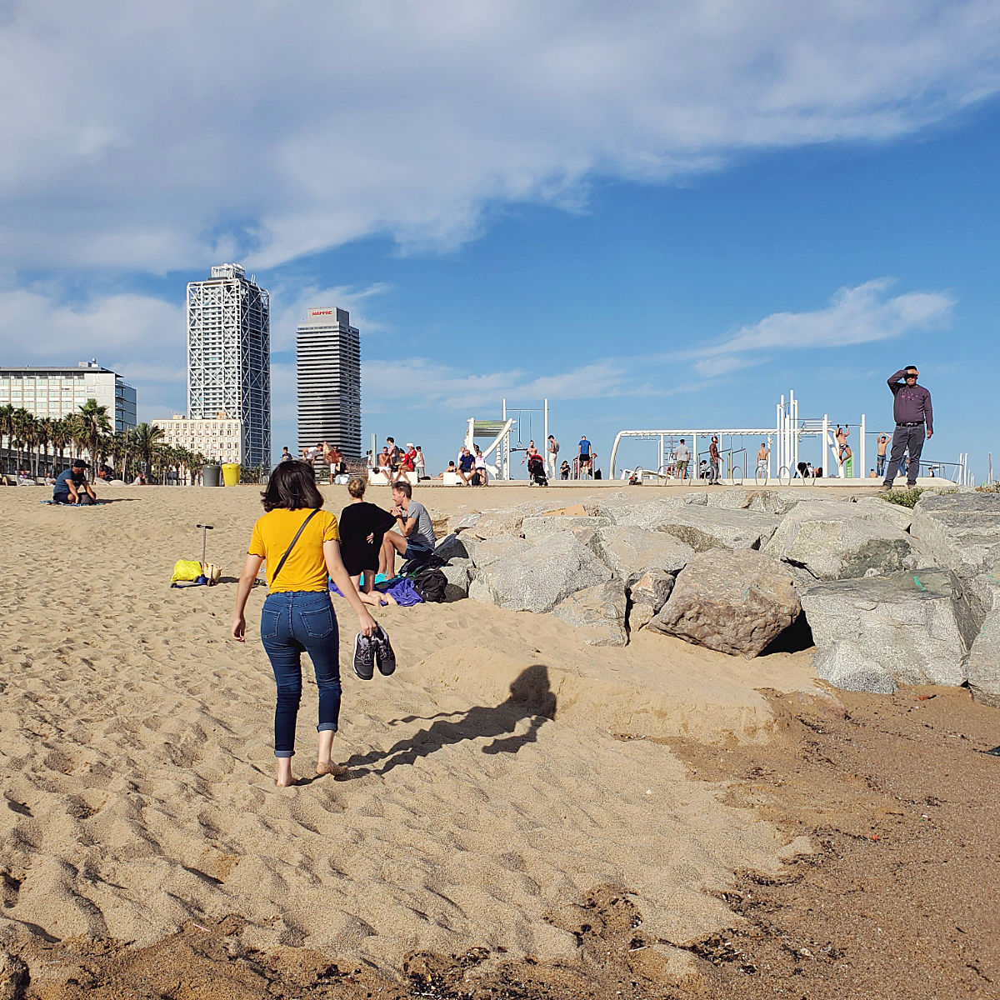
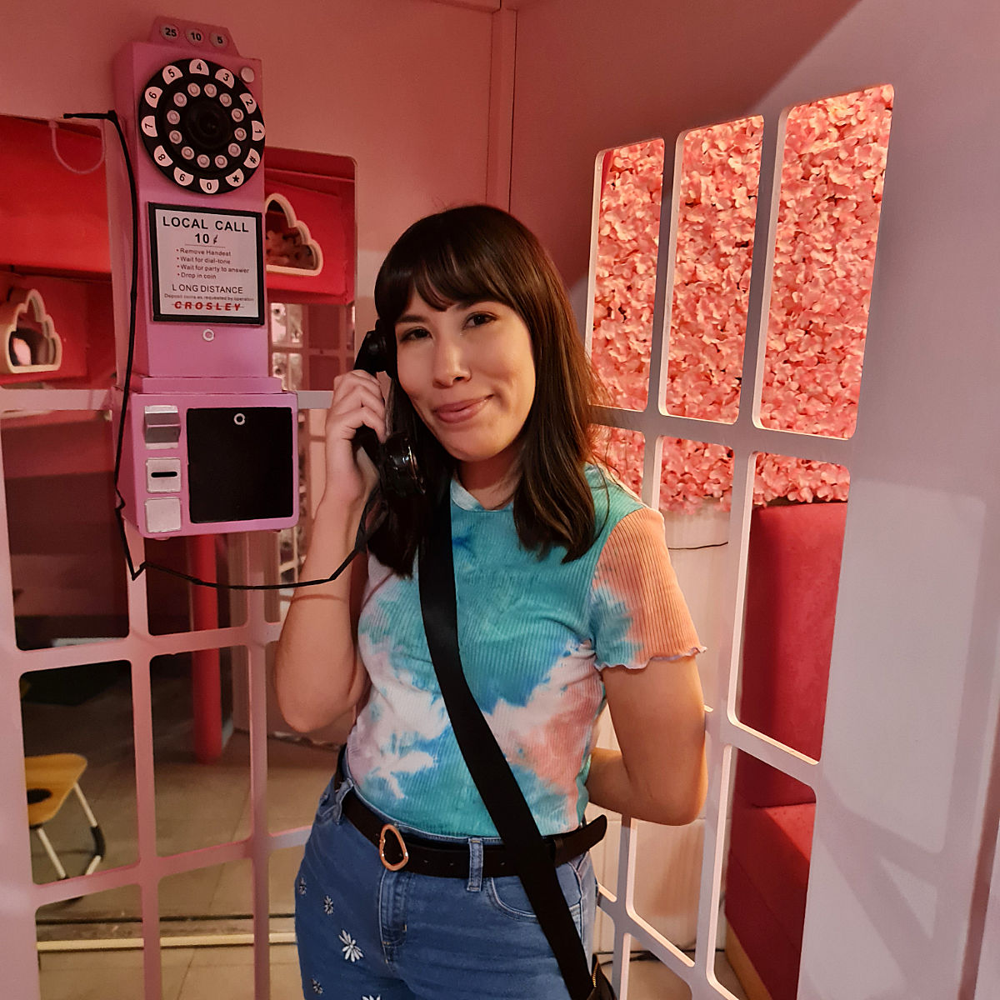
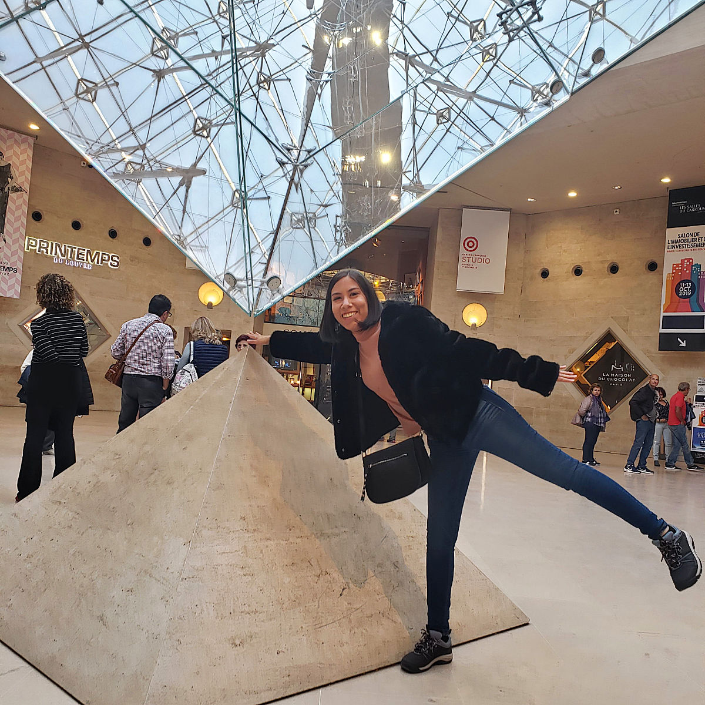
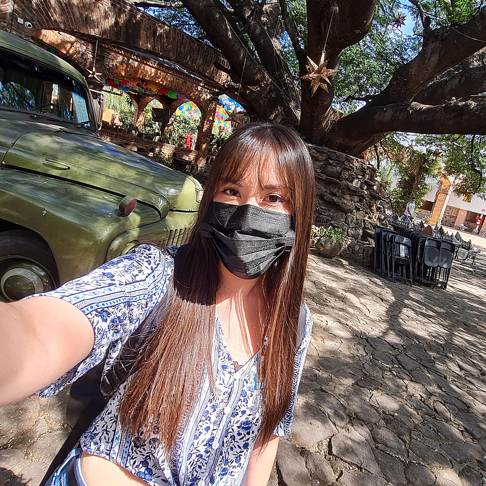

about me
Ever since middle school, I've always been in touch with my artistic side, doodling in all my notebooks and making random sketches. I later started creating my own pieces of art using geometric shapes and shading techniques. This continued into high school, and soon I was spending most of my time on my computer making wallpapers and editing music videos. These hobbies were fundamental in my decision to study graphic design.
I'm really lucky to have turned a hobby into a career, and I can confidently say I chose the right path. I've focused my work on digital design, especially UI design and motion graphics. More recently, I've dived into the world of front-end development. Learning the skills necessary to transform my designs into code is the next step in my career.
I currently work as a Senior Visual Designer, focusing on UI design, design systems, motion, and Webflow development while continuing to expand my front-end skills.







